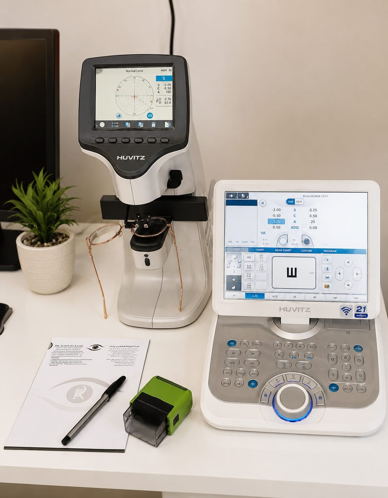
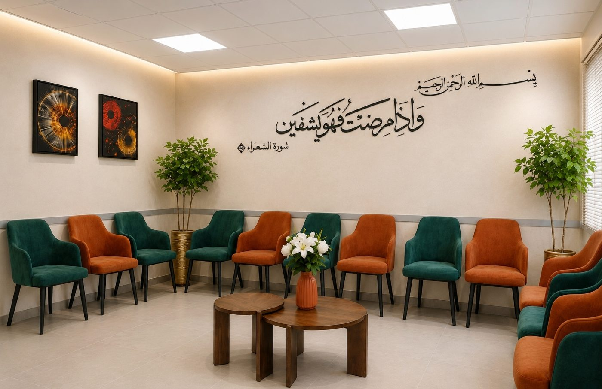
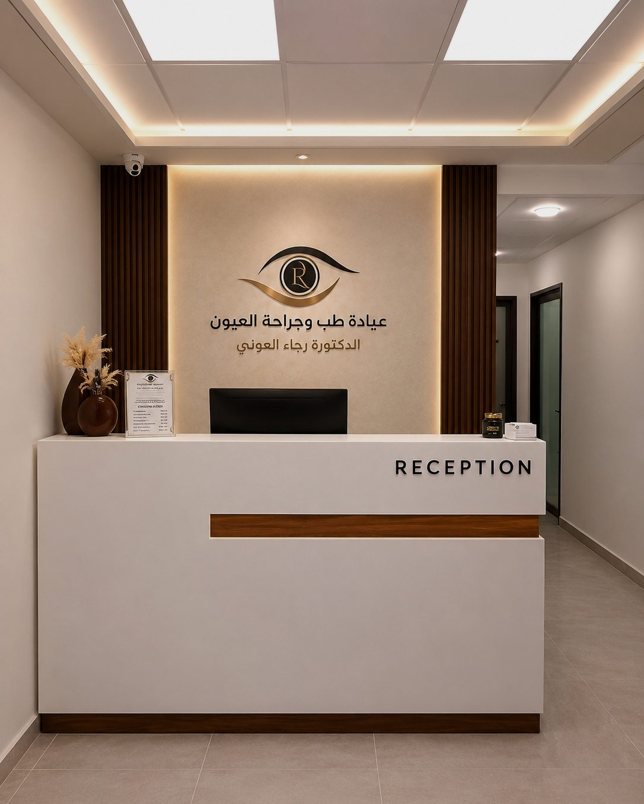
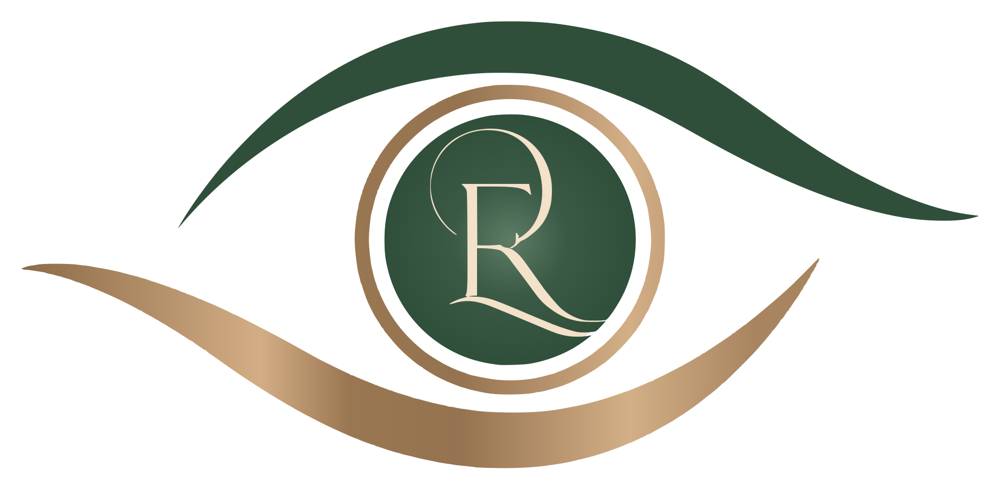

Nos services
Une prise en charge complète de la santé de vos yeux

Votre ophtalmologue
Dr Elaouni Rajae
Le cabinet est né d’une passion pour l’ophtalmologie et d’une volonté d’offrir des soins de qualité, alliant compétences médicales, technologies modernes et approche humaine. L’écoute, la confiance et le bien-être du patient sont au cœur de notre pratique.
- Lauréate de la Faculté de Médecine, de Pharmacie et de Médecine Dentaire de Fès
- Ancienne médecin interne au CHU Hassan II et médecin à l’Hôpital Omar Drissi, Fès
- Chirurgie de la cataracte et chirurgie réfractive — Collège Royal des Ophtalmologues, Royaume-Uni
- Adaptation en lentilles de contact — Université Isabel I, Espagne
- Membre de la Société Française d’Ophtalmologie
Plateau technique
Des équipements modernes pour un diagnostic précis
Dépistage précoce et suivi personnalisé des pathologies oculaires, directement au cabinet.


Le cabinet
Un lieu pensé pour votre confort
3ème étage avec ascenseur, parking à proximité, salle d’attente calme et lumineuse.





« La vision est l’art de voir l’invisible. »
Jonathan Swift
Avis patients
Ils nous font confiance
Note Google : [NOTE] / 5 · [NOMBRE] avis
[Avis Google n°1 à intégrer automatiquement]
[Prénom du patient]
[Avis Google n°2 à intégrer automatiquement]
[Prénom du patient]
[Avis Google n°3 à intégrer automatiquement]
[Prénom du patient]
Infos pratiques
Préparer votre visite
Horaires
Lundi – vendredi : 9h – 17h
Samedi : 9h – 13h
Dimanche : fermé
Conventions
CNSS, CNOPS, mutuelles privées et assurances
À apporter
Carte d’identité (CIN) et fiche d’adhésion à votre mutuelle
Annulation
Merci de nous prévenir à l’avance en cas d’annulation.
FAQ
Questions fréquentes
Comment prendre rendez-vous ?+
Appelez le secrétariat au 05 32 39 18 18, envoyez un message WhatsApp au 07 62 97 08 15 ou passez directement au cabinet.
Quels documents dois-je apporter ?+
Votre carte d’identité (CIN) et la fiche d’adhésion de votre mutuelle.
Le cabinet reçoit-il les urgences ?+
Oui, les consultations d’urgence sont assurées. Appelez le cabinet pour être orienté rapidement.
Combien de temps dure une consultation ?+
Environ 15 minutes en moyenne, selon les examens complémentaires nécessaires.
Contact et accès
Nous trouver
Avenue des FAR, Résidence Oumnia, 3ème étage, Bureau N°17, Fès
Entre Biougnach et Eight Pool Academy
05 32 39 18 18
07 62 97 08 15
dr.elaouni.rajae@gmail.com